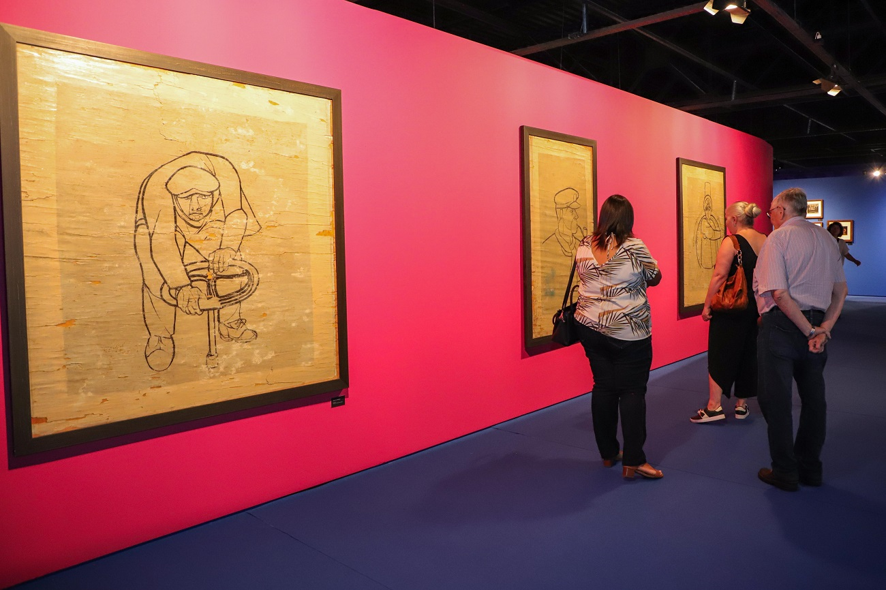

Quem foi Potty Lazzarotto?
O museu Egípcio Rosacruz fica em Curitiba, no Bacacheri, é um dos espaços mais fascinantes do Brasil, pois abriga uma vasta coleção de réplicas fiéis, relíquias e a principal atração, a múmia Tothmea!

O EGITO NO CORAÇÃO DO PARANÁ: A JORNADA DO MUSEU ROSACRUZ
O Museu Egípcio e Rosacruz começou a se desenvolver no Paraná a partir de 1956, quando a Ordem Rosacruz transferiu sua sede nacional para o bairro Bacacheri, em Curitiba. A fundação oficial do museu ocorreu em 17 de outubro de 1990, inicialmente em um prédio com formato de tumba egípcia que abrigava réplicas vindas dos Estados Unidos. O grande salto da instituição aconteceu em 1995 com a chegada de Tothmea, uma múmia real de 2.700 anos que transformou o local em um centro de pesquisas científicas. O crescimento constante do público motivou uma grande expansão em 2019, marcada pela abertura do Museu Tutankhamon e pela criação do Complexo Luxor, consolidando o espaço como um circuito cultural ao ar livre e um dos principais polos de egiptologia da América Latina.

IMPORTÂNCIA CULTURAL
O Museu Egípcio e Rosacruz desempenha um papel cultural fundamental como centro de educação, preservação histórica e descentralização da arte no Brasil. Ao abrigar um dos raros acervos sobre a Antiguidade no país — e a única múmia egípcia em solo brasileiro aberta à visitação pública —, o local democratiza o acesso à história antiga mundial, permitindo que estudantes e pesquisadores vivenciem de perto aspectos do Egito Antigo sem a necessidade de viajar ao exterior. Além do valor educativo, o complexo destaca-se pelo trabalho de preservação e reprodução fiel de artefatos em parceria com instituições internacionais de arqueologia. Esse empenho fomenta o turismo cultural e fortalece o conhecimento sobre o patrimônio histórico global, promovendo também o respeito à diversidade cultural e às origens das filosofias e ciências ocidentais.

CURIOSIDADES
A múmia Tothmea
O maior destaque do acervo é Tothmea, uma múmia autêntica de uma mulher egípcia com cerca de 2.700 anos. Ela foi doada ao museu em 1995 pelo Museu Egípcio Rosacruz de San Jose, na Califórnia. O acervo conta com estudos científicos e reconstruções faciais digitais para mostrar como ela era em vida.
Réplica Fiel do Rei Tutankhamon
O complexo inclui o Museu Tutankhamon, inaugurado em 2019, inteiramente dedicado ao "faraó menino". O espaço exibe réplicas oficiais feitas pelo próprio Conselho Superior de Antiguidades do Egito, incluindo a famosa máscara mortuária de ouro, o sarcófago antropomórfico e o trono real
Para quem quer conhecer o museu mais e perto
a seguir, vamos dar uma olhada em algumas imagens do Museu Egípcio Rosacruz

